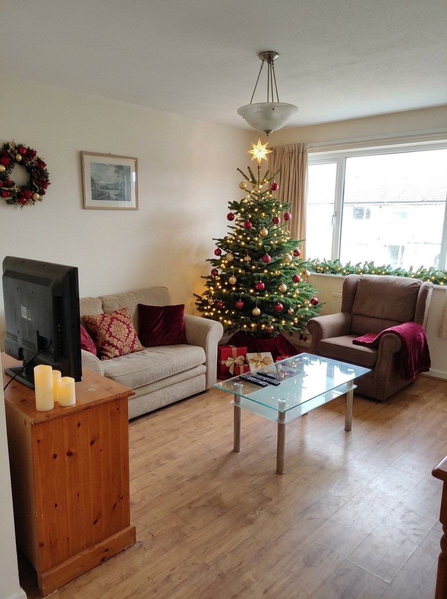
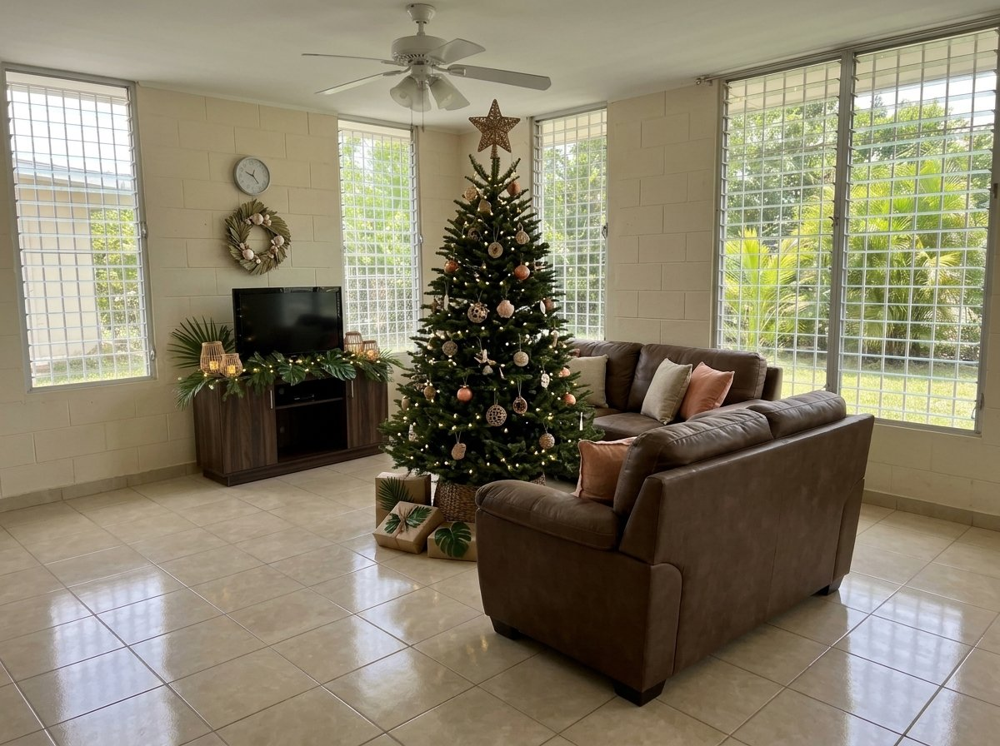
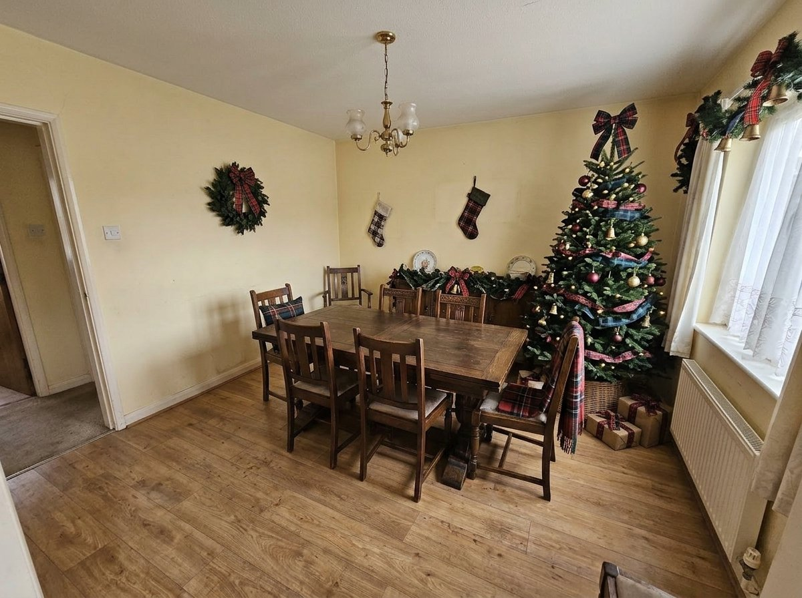
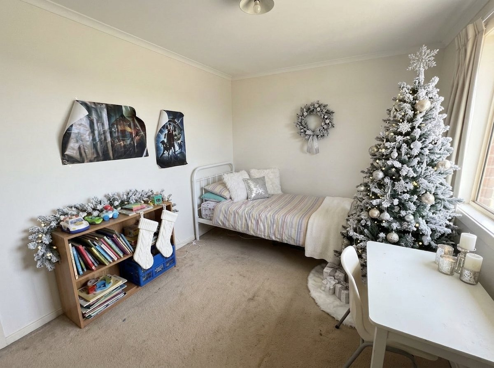
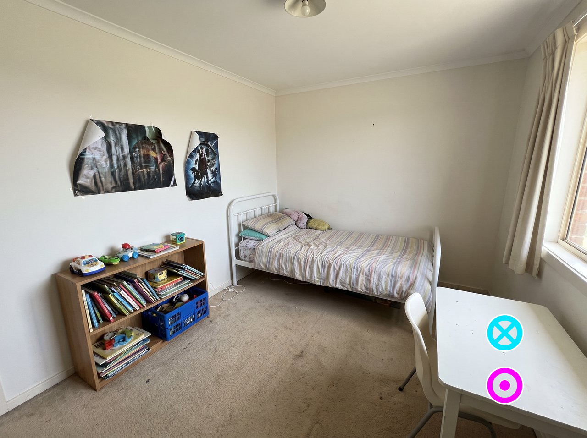
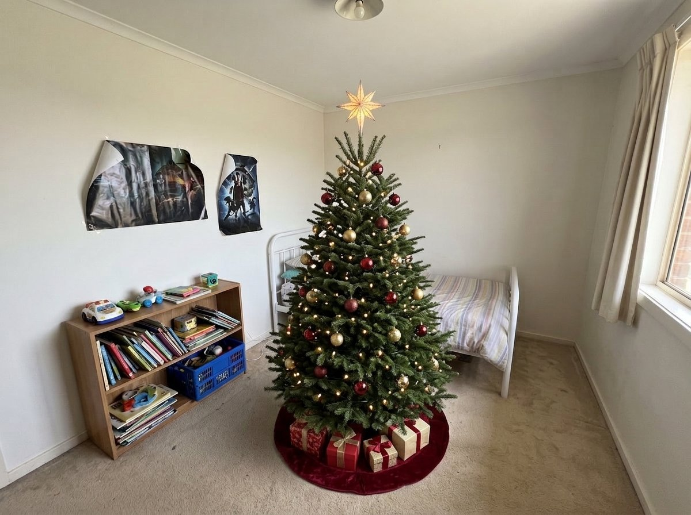
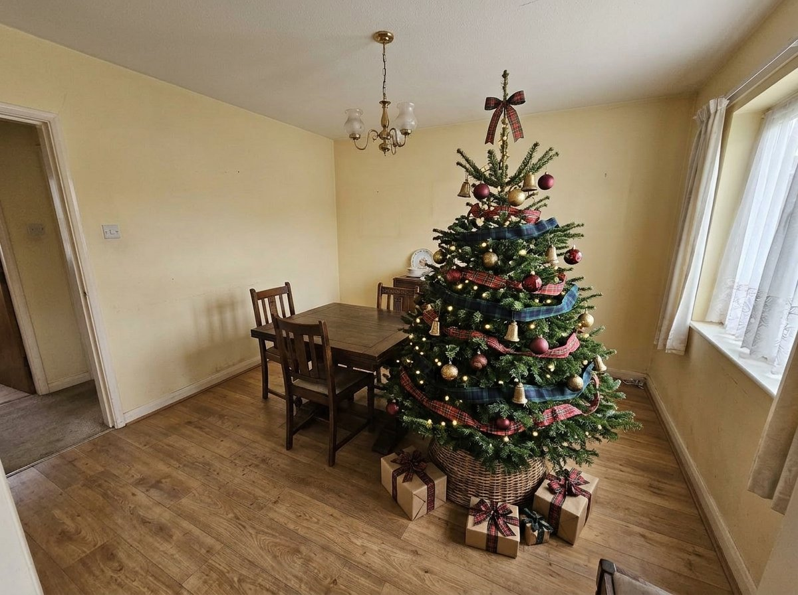
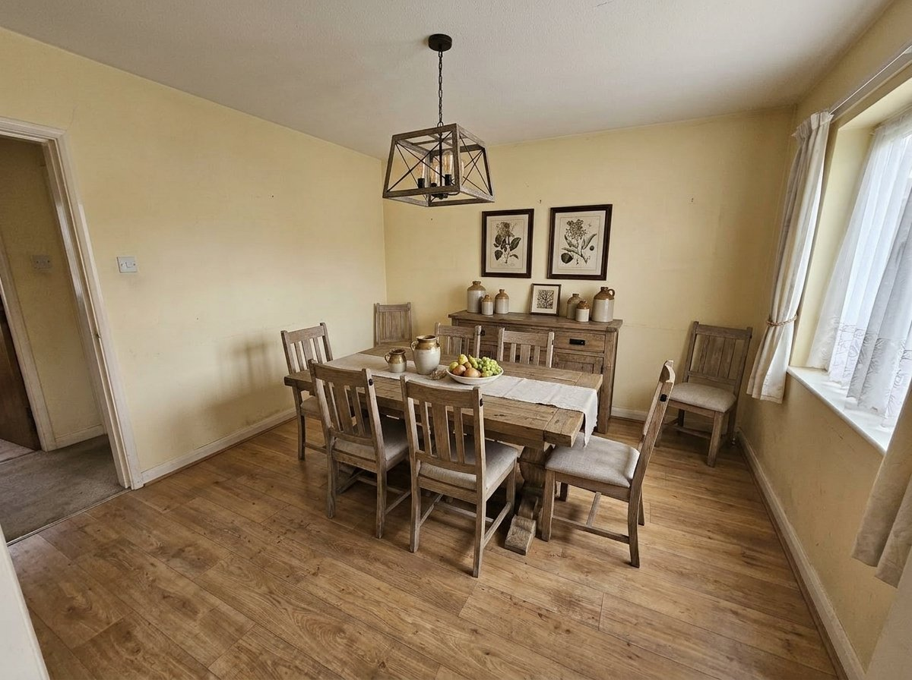

decor: 1/4 | xmas-remove: 0/2 | room-remove: 0/1
Classic, whole room, auto spot. Sofa, armchair, glass table, TV and pine chest must stay put.
FAIL v1 (furniture lock + final check). Still zoomed: sofa cut off behind the TV, armchair shifted right.

Tropical, whole room, tapped spot front left. Two sofas, TV unit and stacked chairs must stay put.
FAIL v1. Sofas hold, but the tree stands on the stacked chairs instead of the tapped spot and the chairs are gone.


Tartan, whole room, auto spot. Table, six chairs and sideboard must stay put.
FAIL v1. Extra armchair in the corner again, and a radiator invented under the window.


Winter, whole room, auto spot. Bed, bookcase, desk and chair must stay put.
PASS v1. All four pieces in place.


Remove the desk, KEEP the chair that touches it.
FAIL v1 (hidden-part + count wording). Chair still removed, tree slid to the middle of the room.


Remove the right-hand chair, KEEP the table and the other five chairs.
FAIL v1. Marked chair gone, but a front chair and half the table vanish behind the tree.


Farmhouse without the right-hand chair: five chairs, an empty place, no new furniture or doors.
FAIL v1. Marked chair back, plus two spare chairs against the walls. Worse than baseline.

